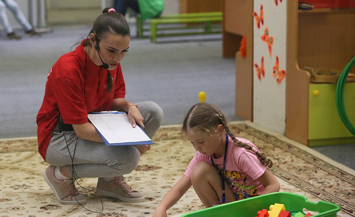
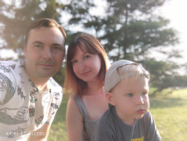
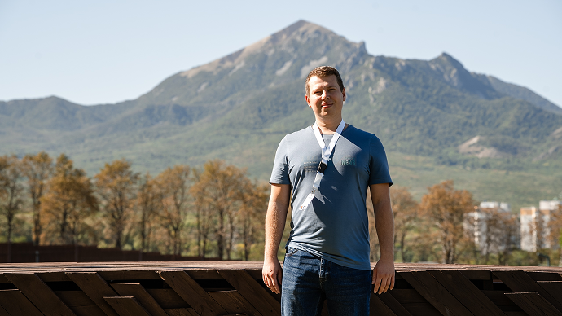
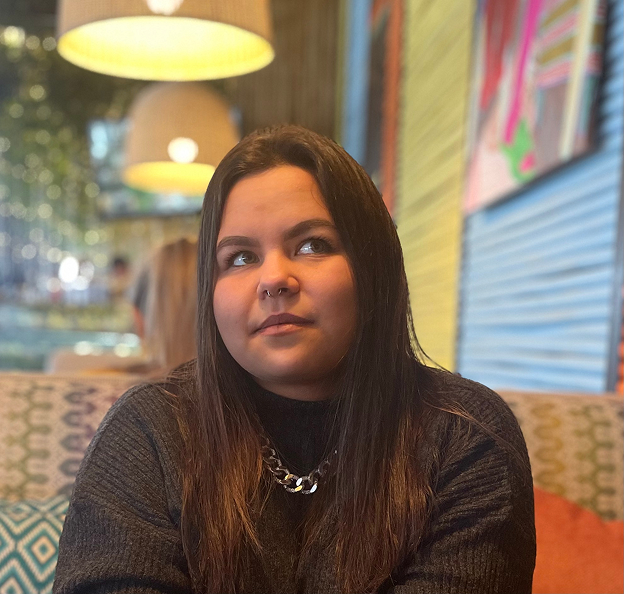
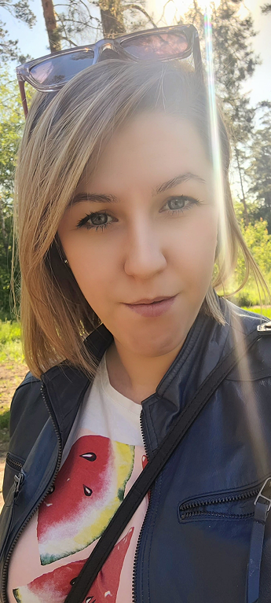

Команда профессионалов, которые вдохновляют и передают знания
«Мама 24 ангелочков и 23 актрис »
«Я знаю что у вас все получится, ведь вы поступили в ТСПК, а значит способные»

«Детей понять так же сложно как и точные науки. Этот тяжкий труд несут воспитатели»

«Даже если вы перепутали кавычки в коде, эта мелочь может все разрушить»

«Всегда иди вперед, никогда не оглядывайся назад и смотри под ноги»

«Мы хотим сделать все круто, классно и чётинько, потому что мы программисты»
«Если вы сможете работать с C#, сможете освоить все, даже химию»

«Упорство и труд - все перетрут»